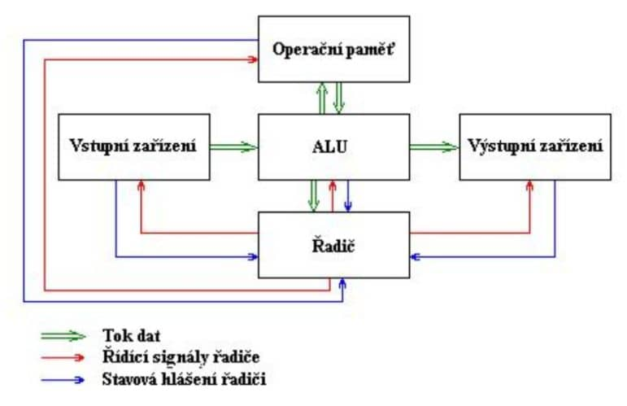

4. Historie PC a číselné soustavy
Jednoduchá počítadla
- Abakus - destička, na které se dají posouvat korálky nebo kamínky
- Logaritmické tabulky - 1614 objevil John Napier využití logaritmů
Mechanické kalkulátory
- Mechanismus z Antikythéry - výpočet kalendáře, polohy slunce a měsíce
- Thomasův Arithmometr - sčítání, odčítání, násobení, dělení, první sériově vyráběný kalkulátor
Děrné štítky
- Využití k řízení chodu tkacího stroje
- Využití při sčítání lidu v USA v roce 1889 jako nosiče dat
Mechanické počítače (1805-1925)
- Diferenciální stroj - první univerzální Turingovsky úplný počítač (možnost změny účelu počítače pouhou změnou programu bez nutnosti přestavby počítače)
Elektromechanické počítací stroje (1890-1945)
- Z1,Z2,Z3 - pracoval ve dvojkové soustavě, 50 atritmetických operací za minutu
- ABC - řešení lineálních rovnic v oblasti fyziky
Reléové počítače (II. Světová válka)
- Colossus - lámání německých šifer, vytvářených stoji Enigma
- Mark I - IBM, Elektromagnetické prvky, děrná páska, Americké námořnictvo ho využívalo k výpočtu balistických tabulek
- Mark II - releové zařízení, desetinné číslice, operační paměť dokáže pojmout až 100 čísel
Elektronkové počítače (po roce 1946)
- ENIAC - první počítač, který pracoval podobně jako dnešní počítače, umožňoval smyčky i podmíněné skoky, až 5000 součtů za sekundu
- MANIAC - výpočty v matematice, fyzikální děje, využit k vývoji jaderné bomby
Mikropočítače
- Apple II
- Commodore 64
Princip činnosti počítače podle von Neumannova schématu
Podle tohoto schématu se skládá počítač z pěti hlavních modulů.
-
Operační paměť
- Slouží k uchovávání zpracovaného programu, zpracovaných dat a výsledků výpočtů
-
ALU (Arithmetic Logic Unit)
- Jednotka provádějící veškeré aritmetické výpočty a logické operace
-
Řadič
- Řídící jednotka, která řídí činnost všech částí počítače.
- Řízení prováděno pomocí řídících signálů rozesílané jednotlivým modulům
- Odpovědi na řídící signály jsou posílány zpět
-
Vstupní zařízení
- Zařízení určená pro vstup programu a dat
-
Výstupní zařízení
- Výstup výsledků, které program zpracoval
Další moduly se dají odvodit spojením základních modulů.
-
Procesor
- Řadič + ALU
-
CPU (Central Processor Unit)
- Procesor + Operační paměť
Princip fungování
- Do operační paměti se pomocí vstupních zařízení přes ALU umístí program, který bude provádět výpočet.
- Stejným způsobem se do operační paměti umístí data, která bude program zpracovávat
- Proběhne vlastní výpočet, jehož jednotlivé kroky provádí ALU. Tato jednotka je v průběhu výpočtu spolu s ostatními moduly řízena řadičem počítače. Mezivýsledky výpočtu jsou ukládány do operační paměti.
- Po skončení výpočtu jsou výsledky poslány přes ALU na výstupní zařízení.
BIOS
- Basic input/output system
- Základní program počítače, který inicializuje a konfiguruje hardware při spouštění počítače a následně spouští operační systém
- Je uložen na základní desce v ROM, EEPROM nebo Flash paměti
Strojový kód
- Posloupnost strojových instrukcí prováděných procesorem počítače, zapsaných pomocí posloupnosti číselných kódů těchto instrukcí
- O překládání těchto instrukcí se stará většinou assembler
- Instrukce jsou v paměti uloženy jako sekvence bitů
Bit
- Binary digit = dvojková číslice
- Základní a nejmenší jednotkou dat
- Může obsahovat dvě hodnoty: 1 a 0
Byte
- Skupina 8 bitů
Počítání a převádění mezi nejpouživanějšími číselnými soustavami
Na desítkovou
- Cifry čísla od zadu násobíme číslem dané soustavy na ntou (n = pozice čísla, první pozice = 0)
- Součet násobení jednotlivých cifer dá číslo v desítkové soustavě
(10010)2 = 0 × 20 + 1 × 2 1 + 0 × 22 + 0 × 2 3 + 1 × 24 = 0 + 2 + 0 + 0 + 16 = 18
(132)16 = 2 × 160 + 3 × 16 1 + 1 × 162 = 2 + 48 + 256 = 306
Z desítkové
- Číslo dělíme číslem soustavy, do které chceme číslo převést
- Zbytky dělení si zapisujeme a dělení opakujeme dokud výsledek nevýjde 0 nebo 0 se zbytkem
- Zbytky poté od posledního výpočtu směrem nahoru dají číslo ve výsledné soustavě
158 ÷ 2 = 79 zb. 0
79 ÷ 2 = 39 zb. 1
39 ÷ 2 = 13 zb. 1
13 ÷ 2 = 9 zb. 1
9 ÷ 2 = 4 zb. 1
4 ÷ 2 = 2 zb. 0
2 ÷ 2 = 1 zb. 0
1 ÷ 2 = 0 zb. 1
158 je v binární soustavě 10011110